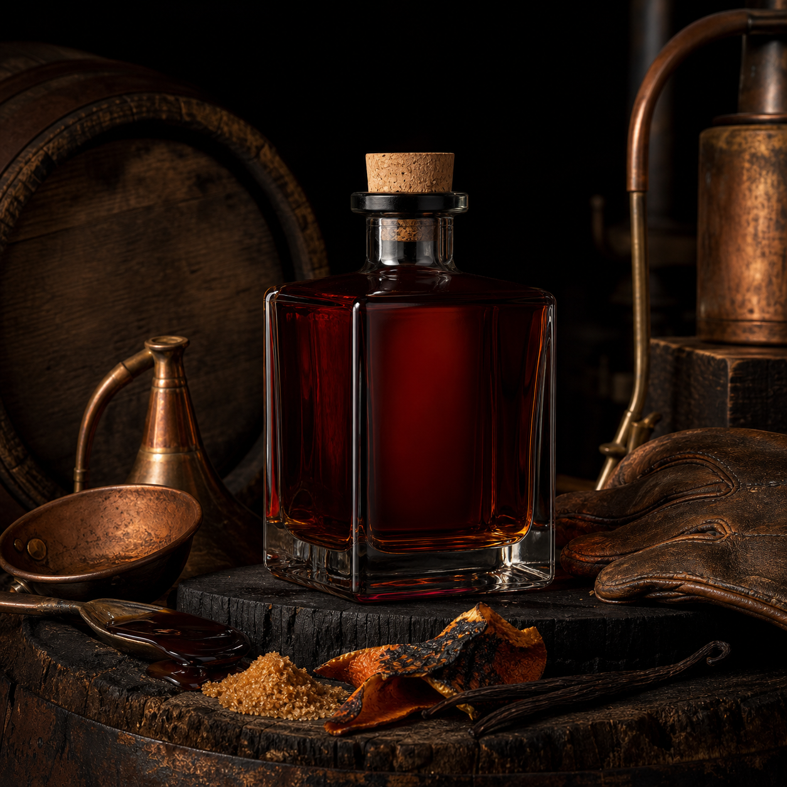

Molasses, orange oil, antique wood, copper warmth.
The Dark Pull
Bragg Creek Rum is not built to disappear into a mixed drink. It is dark, slow, barrel-heavy, and made in batches small enough that every bottle has a memory attached.
What is in the glass
Mahogany red. Oak black. Long finish.
The profile leans into blackstrap molasses, burnt orange peel, vanilla bean, leather, copper, and smoke from deep char. Snake will not hand you the sheet, but the method leaves fingerprints: make the base honest, let the barrel speak, and stop touching it when it starts telling the truth.
- StylePrivate dark rum
- ColorMahogany red-black
- ReleaseVery limited bottles
- AccessBooking request only
Bragg Creek
Rum Private Dark Stock By Snake
Rum Private Dark Stock By Snake

Aged well
No rush survives the barrel room.
Bragg Creek's better notes are the ones that take their time: old oak, dark sugar, red fruit, dry spice, and a finish that hangs around like a leather jacket on the back of a chair.
Dense dark sugar, vanilla, smoke, and barrel spice.
Dry oak, leather, red heat, and a slow fade.